3 In-Order CPU, Pipelining
Pipelining
- Improves throughput at the expense of latency
- Why latency goes up?
- More HW added to each stage (eg pipeline reg)
- Clocked at speed of slowest stage
- Why latency goes up?
- Higher throughput as instructions finish at faster rate, and more instructions are executed in parallel
We now discuss an in-order 5-stage pipeline CPU architecture. The 5 stages are:
- Fetch
- Decode
- Execute
- Memory
- Writeback
In the diagrams, red wires represent control signals
3.1 Fetch
- Fetch an instruction from memory every cycle
- Use PC to index into memory
- PC + 1 or PC + N (for N byte words)
- Increment PC after fetching (assume no branches for now)
- Use PC to index into memory
- Write the results to the pipeline register IF/ID
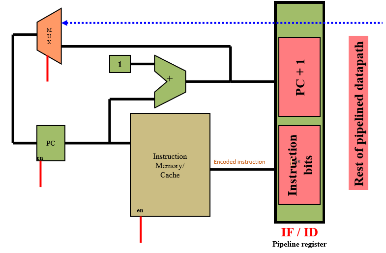
3.2 Decode
- Decodes the opcodes to know what operation it is
- Read input operands from the Register File
- Operands specified by regA and regB of instruction
- Write state to the pipeline register ID/EX
- Opcode
- Register contents
- Offset & destination fields
- PC + 1 (or PC + 4)
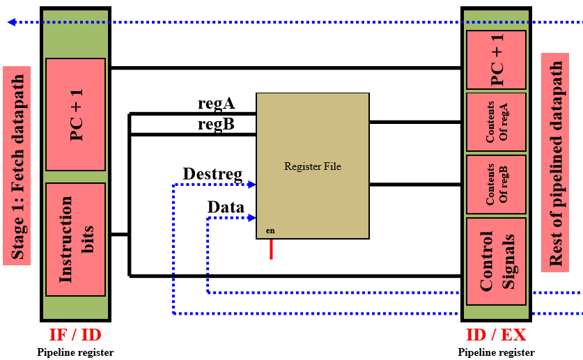
3.3 Execute
- Perform ALU Operation
- Inputs can be regA or regB or offset fields on the instruction
- Or for branch instructions calculate the PC+1+offset
- Write state to pipeline register EX/MEM
- ALU results, contents of RegB and PC+1+offset
- Instruction bits for opcode and destReg specifiers
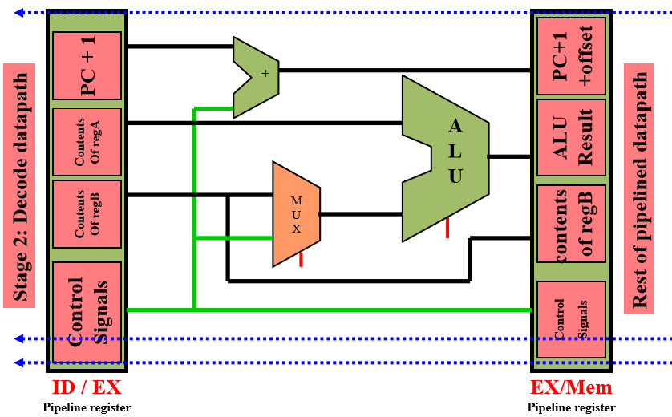
3.4 Memory Operation
- Perform data cache access for memory operatoins (load/store)
- ALU already gave us results for the address of load/store
- Opcode bits control the read/write and enable signals to memory
- Write state to pipeline register MEM/WB
- ALU Result and MemData
- Instruction Bits for opcode and destReg specifiers
- Massively Simplifying assumption: mem operations take 1 cycle
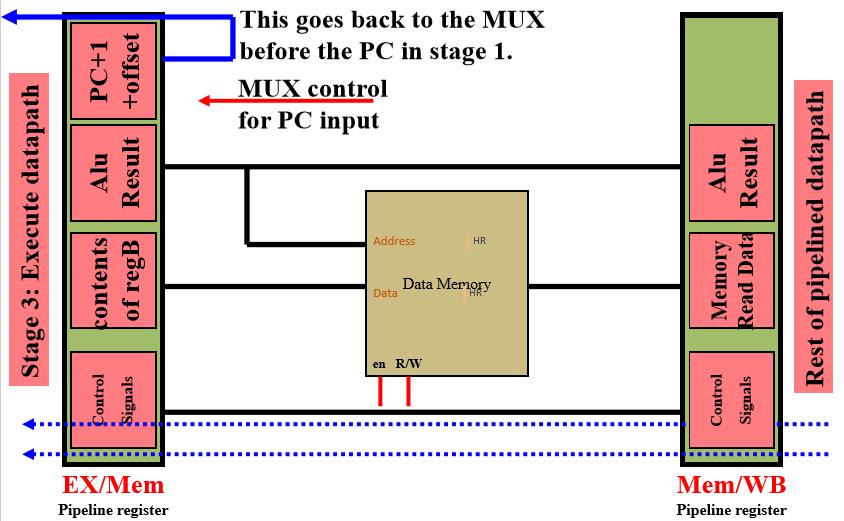
3.5 Writeback
- Write the results to register file (if needed by this instruction)
- Write MemData to destReg for a load
- Write ALU result to destReg for arithmetic operations
- Opcode bits control the register write enable signals
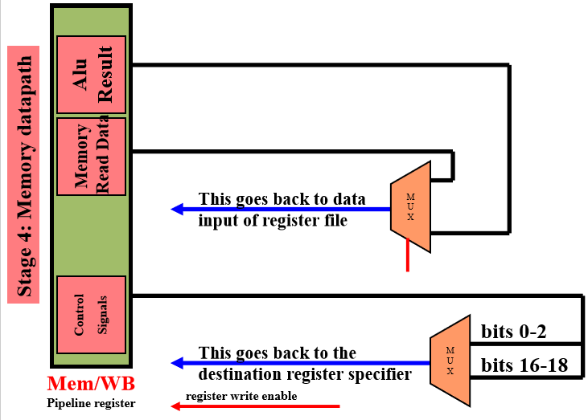
3.6 Timing
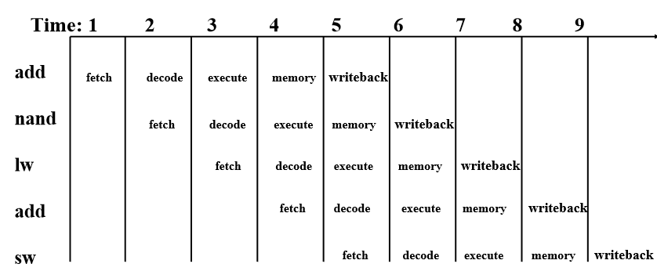
3.7 Dependencies, Hazards
Why don’t we have arbitrarily deep pipelines?
- Instruction pipelines are not ideal - i.e. instructions have dependencies between each other, too deep of a pipeline will cause a lot of stalls to resolve dependencies
- When pipelines are flushed, deep pipelines incur great cost since it takes many more cycles to fill back up
Hazards - situations that prevent the next instruction in the stream from executing in its designated clock cycle. Three classes of hazards:
- Structural Hazards - resource conflicts in hardware
- Data hazards - instruction depends on result of another instruction
- Control hazards - comes from the pipelining of branches and other control flow
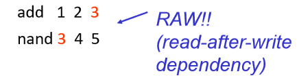
RAW - Read After Write - a later instruction’s input(s) relies on a previous instruction’s result
Data dependency \(\neq\) hazards - they often lead to hazards but not necessarily
Pipeline Hazards:
Potential violations of program dependencies
Hazard resolution:
- Static method: resolve at compile time in software (by compiler or programmer)
- Dynamic method: resolve in hardware at run time
Pipeline interlock:
- Hardware mechanisms for dynamic hazard resolution
- Must detect and enforce dependences at run time
3.7.1 Structural Hazards
In an in-order pipeline processor, structures such as the cache/memory can have limited ports to read/write from/to, thus overlapping usage of the memory can result in hazards
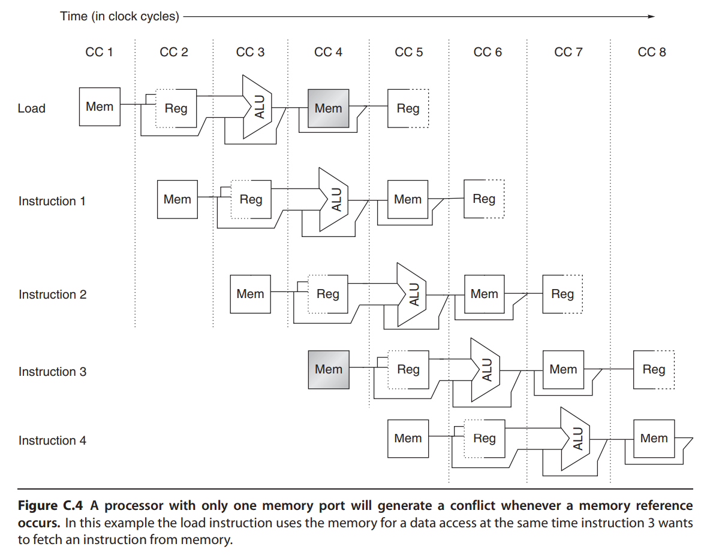
3.7.2 Data Hazards
Techniques to handle data hazards:
- Avoidance (static)
- Detect and Stall (dynamic)
- Detect and Forward (dynamic)
3.7.2.1 Avoidance
3.7.2.2 Detecting Data Hazard (In-Order Pipeline)
A RAW hazard can be detected by:
- Checking if regA & regB are the same as the destReg of the two instructions immediately before it
- Why two instructions? See examples below
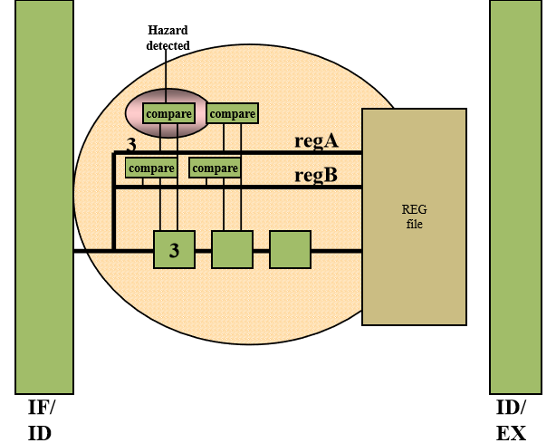
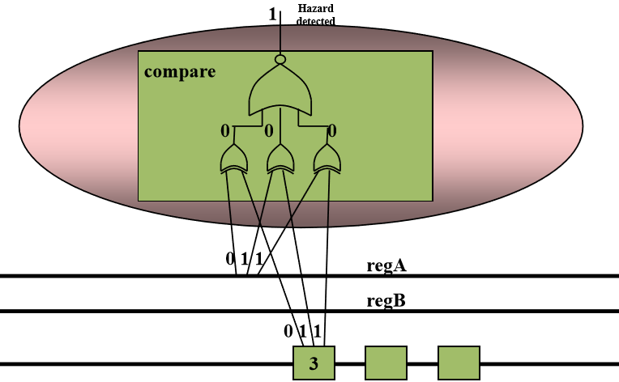
Consider the following example:
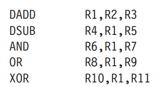
- All instructions after DADD reads from DADD’s destReg (R1)
- DSUB will read the wrong R1
- AND will read the wrong R1
- OR will read the correct R1
- Assuming ID reads from RF in the second half of the cycle:
- DADD will write to RF in the first half of cycle and OR will perform RF read on second half. No forwarding needed
- XOR will read the correct R1
- Register read occurs the cycle AFTER DADD writesback
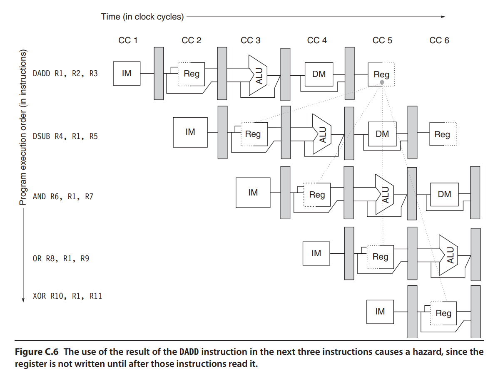
3.7.2.3 Detect & Stall
Every time a hazard is detected, we stall:
- Disable PC and do not advance pipeline register for IF/ID
- Clear ID/EX register
- Pass NOOP to Execute stage
Problems:
- CPI increases on every hazard!
- Unnecessary stalling (not “true” dependence)
3.7.2.4 Detect & Forward
After detecting hazard, forward the register’s result
- Add data paths for all possible sources
- Add MUX in front of ALU to select source (based on detection)
Forwarding eliminates data hazards involving arithmetic instructions
More specifically, forwarding between arithmetic instructions works as follows:
- ALU results from BOTH the EX/MEM and MEM/WB pipeline registers are fed back to the ALU inputs
- If data hazard is detected that the previous ALU instructions’ destReg is a sourceReg of the current ALU instruction, MUX selects forwarded result
- Note that if the instruction DSUB is stalled, forwarding will not be activated
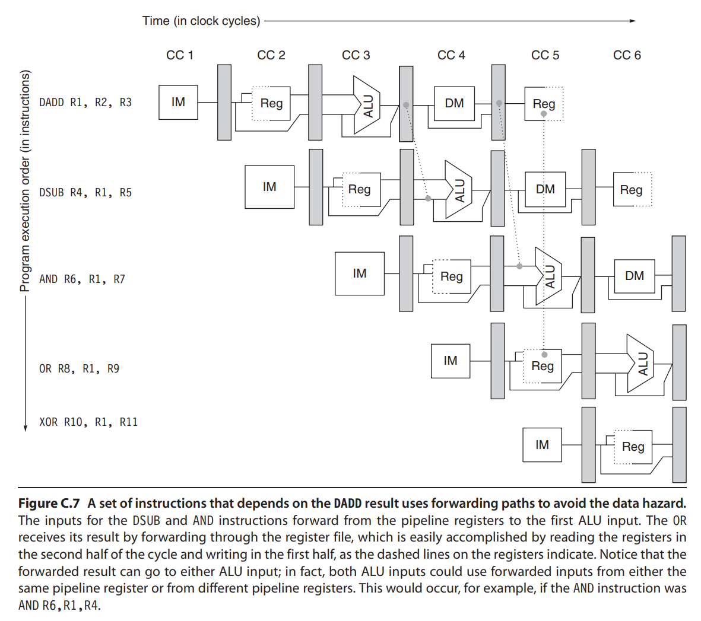
In general, we can forward results directly to a functional unit that needs it
Example Instruction Sequence:
DADD R1,R2,R3
LD R4,0(R1)
SD R4,12(R1)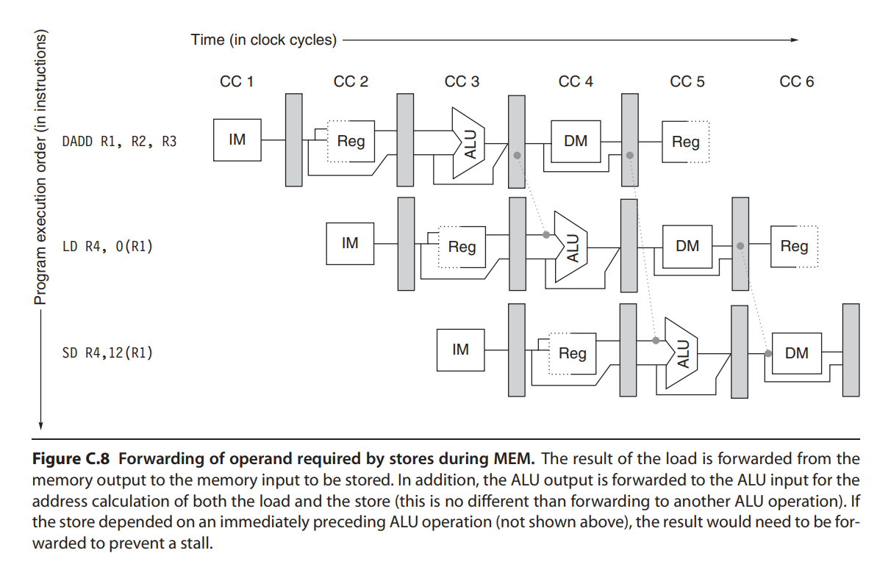
In the above example, the forwarding path added ontop of the previously mentioned paths is from WB/MEM register to input of MEM
Problems:
- Each possible hazard requires different forwarding paths
- “bypassing logic” is often a critical path in wide-issue machines
- i.e. superscalar machines
- number of forwarding paths grow quadratically with machine width
3.7.2.5 Data Hazards Requiring Stalls
Not all data hazards can be handled by forwarding/bypassing. Consider the following:
LD R1,0(R2)
DSUB R4,R1,R5
AND R6,R1,R7
OR R8,R1,R9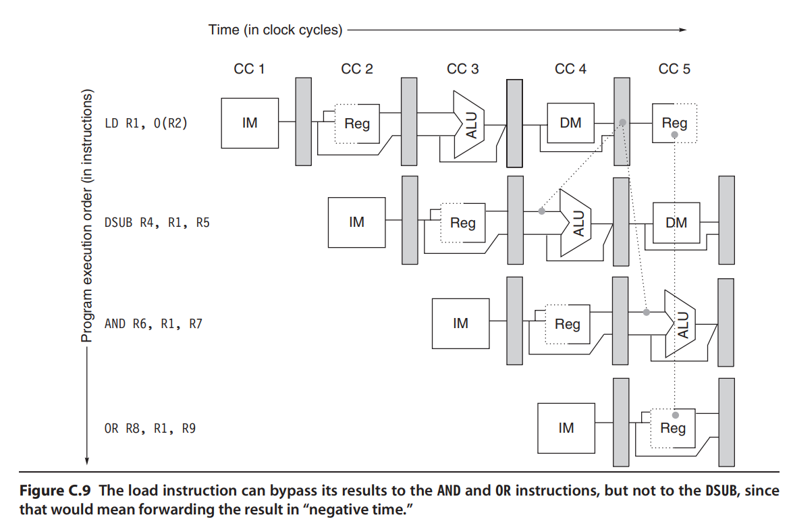
Need to stall when an instruction is immediately after the load and the sourceReg is the load’s destReg
To solve this, a pipeline interlock must be added to stall the dependent instruction by a cycle.
3.7.3 Control Hazards
Techniques to handle control hazards
- Avoidance (static)
- Detect and Stall (dynamic)
- Speculate and Squash (dynamic)
3.7.3.1 Avoidance
3.7.3.2 Detect and Stall
Detect when an opcode is a branch/jump. Then stall by inserting noops into the execute stage until the branch target is resolved.
- Branches result in a 1-2 cycle stall, depending on the ISA (if branch target is always known after ID, then 1 cycle stall; if branch target is known after EX, then 2 cycles stall)
3.7.3.3 Speculate and Squash
Speculate that a branch is Not Taken (i.e. PC + 1). If we see that we didn’t speculate correctly, then we squash:
- Overwrite opcodes in fetch, decode, execute with NOOP (squash whatever is already in the pipeline)
- Pass correct target to fetch
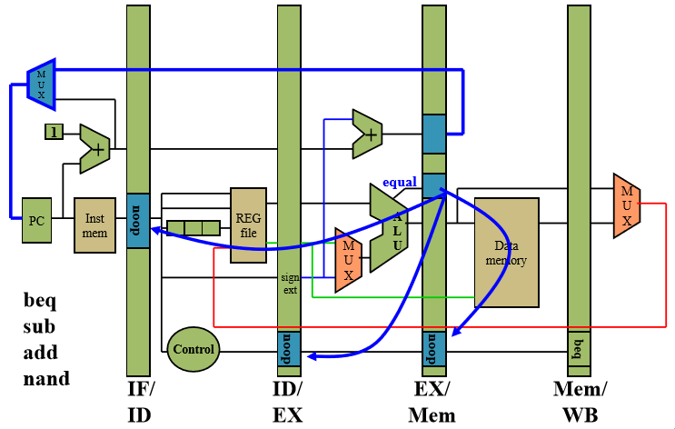
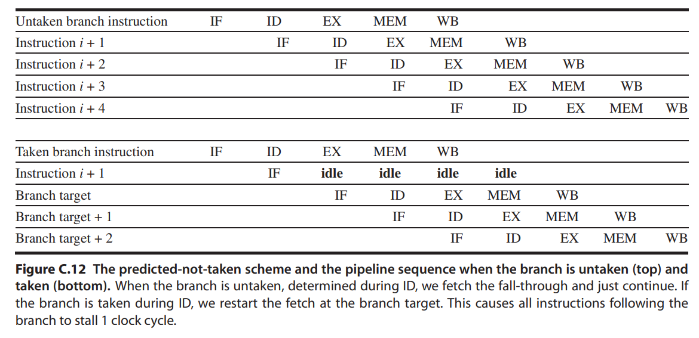
No penalties if the branches are always not taken.
3.8 Summary
- Hazards in in-order pipeline:
- Structural Hazard - Memory port contention
- Data Hazard - RAW Dependency
- Control Hazard
Data Hazards - Can Forward:
- RAW dependence within 2 instructions:
- Load to RegA then immediately after storing from RegA to mem
Data Hazard - Forwarding Paths:
- For immediate RAW dependence: EX/MEM pipeline reg -> ALU input
- For 2 instruction RAW dependence: MEM/WB pipeline reg -> ALU input
- For immediate RAW (load-store) dependence: MEM/WB pipeline reg -> MEM input
Data Hazards - Need to stall:
- RAW dependence on a LOAD immediately before it. Stall for 1 cycle
Control Hazard - Detect and Stall:
- Branches result in a 1-2 cycle stall, depending on the ISA (if branch target is always known after ID, then 1 cycle stall; if branch target is known after EX, then 2 cycles stall)
3.9 References
- Hennessy & Patterson - Appendix C
- CS4617 - L9